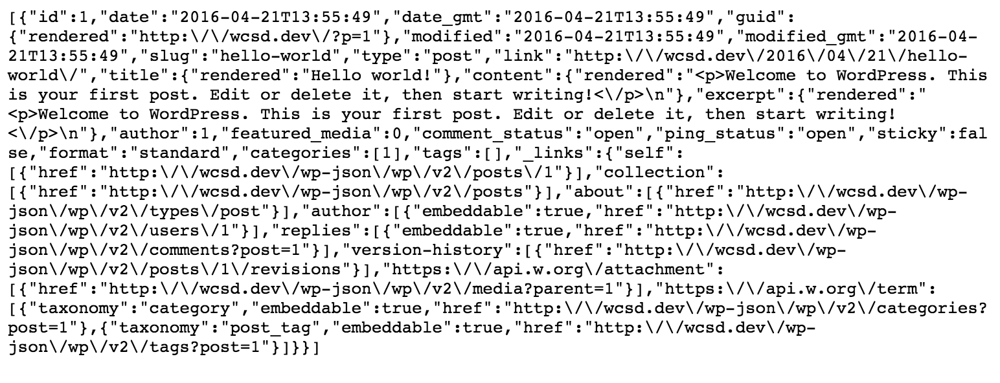

WP as an Engine
for Hybrid Mobile Apps
or:
DOES MY COFFEE SHOP NEED AN APP?
Created by AJ Zane
@azanebrain ~
Veyo ~
Front End Authoriy
My coffee shop
has an app
Does my coffee shop need an app?
IMDB, VONS, Reddit, Subway,
CNN, Stack Exchange, HipMunk,
Facebook, Trip It, Seafood Watch,
Jamba Juice, Quora, Trip Advisor,
Meetup, LinkedIn, Pluralsight, Trello
. . .
Opposite of the
Responsive Revolution
Assumptions
Offline Storage
Push Notifications
Rich Data Models
Speed
Assumptions are wrong
Browser Offline Storage & Push Notifications with Webworkers
WordPress is an Engine
Speed
Will texting work?
Twitter was a hybrid app
When DO you
need an app?
When DO you need an app?
Require Device Hardware
When DO you need an app?
Individual Concern
SAAS
apppresser, reactor, wp app kit,
mobiloud, ideapress, worona,
wiziapp, engine themes, wp app ninja,
ionopress, moby blog, engap,
androapp, appful, iwapppress
. . .
Ease of Use
vs
Limited Control
Hybrid apps are cool
because we're inherently lazy efficient
because they use web build tools
One codebase to rule them all
WP JSON REST API
REST: REpresentational State Transfer
A methedolgoy for clients (browsers) and servers to interact in complex ways without the client knowing anything beforehand about the server and the resources it hosts
REST Verbs
- GET
- PUT
- POST
- DELETE
JSON: JavaScript Object Notation
A lightweight data-interchange format. It is easy for humans to read and write. It is easy for machines to parse and generate
var wcsd = {
name: 'WordCamp San Diego',
date: 'April 23-24, 2016',
location: 'San Diego'
};
console.log('Welcome to: ' + wcsd.name + ' in ' + wcsd.location);
Endpoint
Functions available through the API
Route
The "name" used to access endpoints as a URL
MVC: Model View Controller
PHP: Logic and markup
// The Query
$the_query = new WP_Query( $args );
// The Loop
if ( $the_query->have_posts() ) {
echo '';
while ( $the_query->have_posts() ) {
$the_query->the_post();
echo '- ' . get_the_title() . '
';
}
echo '
';
}
wp_reset_postdata();
MVC
JavaScript:
getPosts() {
return resource.get('http://mysite.com/wp-json/posts');
}
var posts = getPosts();
Markup:
<ul>
{{post.title}}
</ul>
Preparing your site
- HTTPS
- CORS
(Cross Origin Resource Sharing) - Limiting the default number
of posts returned to prevent
accidental DDOS - Torque Mag: Preparing
WordPress to Power
A Single Page Web App
Enable the Plugin
Example: Custom Field meta from ACF
if( function_exists('get_fields') ){
// Add ACF field data to the WP-API
function wp_api_encode_acf($data,$post,$context){
$custom_fields_exist = get_fields($post['ID']);
if ($custom_fields_exist) {
$data['meta'] = array_merge($data['meta'], get_fields($post['ID']));
}
return $data;
}
add_filter('json_prepare_post', 'wp_api_encode_acf', 10, 3);
}
Writing code
30 Second Intro to WP JSON REST API
1) Endpoint:
2) Javascript function
3) JSON:
{
ID: 59,
title: "HR 1599 – Safe and Accurate Food Labeling Act of 2015",
status: "publish",
type: "legislation",
author: { ...},
content: "<p>Vote to pass a bill that prohibi...."
}
Tools you need
Endpoint tester (Postman)
Tools you need
JSON Formatter extension in your favorite browser
Frameworks
- Familiarity
- UI Kit
- Testing
- Community
- Extendable
HTML, CSS, (Angular)JS
Webview within Ponegap (Cordova)
ionicframework.com & angularjs.org (Google)
Open Source
Starter kit on GitHub: miya0001/ionic-starter-wordpress
REACT, JSX
JSCore rendering in Objective C
facebook.github.io/react-native/docs
Open Source
(Calypso)
What else you'll need
- XCode for iOS, Windows for Windows OS
- App store licenses
Custom Endpoints
mysite.com/wp-json/myplugin/v1/author/42
function my_awesome_func( $data ) {
$posts = get_posts( array(
'author' => $data['id'],
) );
if ( empty( $posts ) ) { return null; }
return $posts[0]->post_title;
}add_action( 'rest_api_init', function () {
register_rest_route( 'myplugin/v1', '/author/(?P\d+)', array(
'methods' => 'GET',
'callback' => 'my_awesome_func',
) );
} ); User Authentication
OAuth Plugin: github.com/WP-API/OAuth1
Sanitize Data
bower install angular-sanitizeAdd to index.html:
Inject:
angular.module('app', ['ngSanitize']);Cache
Write data to a local DB
Sync local DB to production DB
Killing Sessions
Formatting the_content
{
"id": 42,
"content": {
"rendered": "<p>Welcome to WordPress.</p>\n"
},
}
// Output: <p>Welcome to WordPress.</p>
Insert HTML instead of printing the string:
Register API-Visible CPT
add_action( 'init', 'my_book_cpt' );
function my_book_cpt() {
$labels = array( ... );
$args = array(
'show_in_rest' => true,
'rest_base' => 'books-api',
'rest_controller_class' => 'WP_REST_Posts_Controller',
);
register_post_type( 'book', $args );
}
Register API-Visible Taxonomy
add_action( 'init', 'my_book_taxonomy', 30 );
function my_book_taxonomy() {
$labels = array(...);
$args = array(
'show_in_rest' => true,
'rest_base' => 'genre',
'rest_controller_class' => 'WP_REST_Terms_Controller',
);
register_taxonomy( 'genre', array( 'book' ), $args );
}
Packaging
WP is a step away

Device features are closer
Cordova
Camera Sample
.controller('MainCtrl', function($scope, Camera) {
$scope.getPhoto = function() {
Camera.getPicture().then(function(imageURI) {
// Image file is in: imageURI
$scope.lastPhoto = imageURI;
}, function(err) {
// Handle the error
}, {
quality: 75,
targetWidth: 320,
targetHeight: 320,
saveToPhotoAlbum: false
});
};
})

Go make some apps!
Starter kit on GitHub:
miya0001/ionic-starter-wordpress
@azanebrain